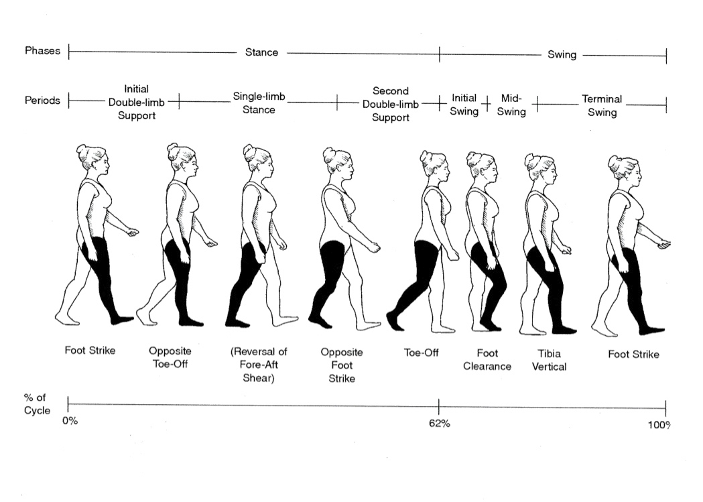
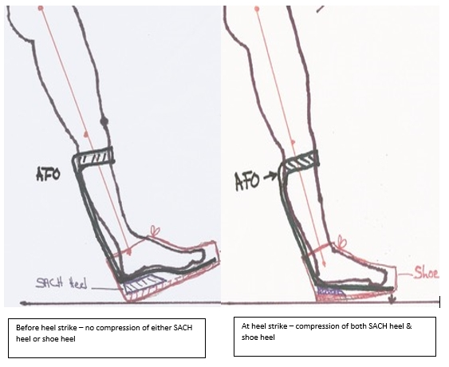

Although the braces featured in the Tips and Insights are Dynamic
Bracing Solutions (DBS) braces, the content of the narratives and
videos is generalized for most brace wearers, particularly those
with custom and innovative braces.
Terms Of Use And Disclaimer:
By using the Human Gait Institute (“HGI”) website, you acknowledge
that you have read and agree to the terms of use and disclaimer
described below:
Narratives, Videos and other information on the Human Gait Institute
(“HGI”) website that are related to the use of leg braces
manufactured and distributed by Dynamic Bracing Solutions (DBS
Braces). And other Vendors, are presented to provide tips and
insights for consideration of possible ways to move in and with DBS
braces. The narratives, videos and other information are referenced
in this Disclaimer as “Information”.
Dynamic Bracing Solutions has not been involved in the preparation
or distribution of the videos and has no responsibility or liability
of any kind resulting from use of the narratives, videos or
utilizing any of the information contained in them.
THE VIDEOS ARE NOT DESIGNED OR INTENDED TO, AND DO NOT, PROVIDE
MEDICAL ADVICE. No person using DBS Braces should make any decisions
or change his or her health behavior based on the Information
provided on the HGI website. The Information provided is intended
solely to provide an existing or potential DBS Brace user with
possible approaches to the use of DBS Braces based on the experience
of one DBS user, BUT because every individual is unique, the tips
and insights offered as Information may not be applicable or helpful
to another individual DBS Brace user and could possibly cause injury
or harm to the DBS Brace user if followed. The presenter does not
warrant, and disclaims all warranties, that the Information will
have a beneficial result, or will not cause harm or damage, to the
DBS Brace user by the tips and insights being followed.
The contents of the videos are for general informational purposes
only. Neither the preparer of the videos nor the Human Gait
Institute, with which the preparer is affiliated, is responsible for
any or all of the tips and insights shared by the preparer on the
Information not working or causing problems with an individual’s
body.
HGI strongly recommends that you consult with a physician before
beginning any exercise program. You should be in sufficiently good
physical condition that you can participate in the exercises
demonstrated in the Information. A DBS Brace user should never
disregard professional medical advice, or delay in seeking it,
because of something the user has seen, heard or read in the
Information. A DBS user should never rely on the Information in
place of seeking professional medical advice from a doctor,
orthotist, chiropractor, physical therapist or other medical
professional. HGI is not a licensed medical care provider and
represents that it has no expertise in examining, diagnosing or
treating medical conditions of any kind, or in determining the
effect of any specific exercise on a medical condition. RELIANCE ON
ANY OF THE INFORMATION IS SOLELY AT THE DBS BRACE USER’S OWN RISK.
THE DBS BRACE USER ASSUMES ALL RISK OF INJURY OR DAMAGE THAT MAY
RESULT TO A DBS BRACE USER FROM FOLLOWING ANY OF THE TIPS OR OTHER
INFORMATION IN THE VIDEOS. You should understand that when
participating in any exercise or exercise program, there is the
possibility of physical injury. If you engage in any exercise or
activity seen on the HGI website, you agree that you do so at your
own risk, are voluntarily participating in the exercise or activity,
assume all risk of injury to yourself, and agree to release and
discharge HGI and all persons affiliated with it from any and all
claims or causes of action, known or unknown, occurring directly or
indirectly from your participation in the exercise or activity.The
Information is copyrighted by HGI or the creators of the Information
and may not be shared or used by any DBS Brace user other than for
the user’s own individual use without the express written permission
of the copyright holder.
Some States or jurisdictions may limit the effectiveness of one or
more provisions of this Disclaimer in which case the Disclaimer will
be effective to the fullest extent permitted by the State or
jurisdiction where the DBS Brace user resides.
By using the Human Gait Institute (“HGI”) website, you acknowledge
that you have read and agree to the terms of use and disclaimer
described above.
Foreword
Tips and Insights for Users of DBS braces is a narrative document
produced by The Human Gait Institute in accordance with it's Mission
Statement, which states:
"The mission of the Human Gait Institute is to assist people in
reaping the benefits of lower extremity bracing (orthotic)
technologies."
In support of this mission, the Human Gait Institute seeks to:
explore innovative technologies related to bracing
provide resources to support individuals who are considering or
using braces
foster education and training of wearers and professionals
support related research
The focus of the original efforts of The Human Gait Institute was to
support wearers of Dynamic bracing Solutions orthoses (DBS). This
support will continue.
The Human Gait Institute (“HGI”) was organized April 11, 2008. It is
a Colorado non-profit corporation. It has obtained tax exempt status
under Section 501(c)(3) of the federal Internal Revenue Code.
HGI is governed by its five Board members who have a combined 150
years of wearing leg braces, buying over 35 different types of
braces. The Board members have gone through the process of obtaining
leg braces in some form over these years. They currently all use
innovative bracing technology.
The workbook is intended to be copied for personal use only. No part
of it can be sold for profit. However, donations to HGI to help
defray the cost of the workbook are greatly appreciated.
Introduction to Tips and Insights Project
About The Development Of Tips And Insights For Learning to Use DBS
Braces:
The videos, narratives and PowerPoints are mainly developed by Human
Gait Institute (HGI) Board members, and other interested
contributors. Many of the ideas come from visitors to the HGI
website (humangaitinstitute.org) or Closed Facebook page. The
developers of this information receive no reimbursement from HGI or
Dynamic Bracing Solutions (DBS). The initial material has been
developed by Karla Stromberger who had polio at the age of 9, and
who now wears Dynamic Bracing Solutions braces. Karla is a retired
and no longer licensed physical therapist, and presents this
material as a DBS wearer and not a PT.
For optimal success it is recommended that you read the Narrative
for each topic and then watch the video. Pause the video part way
through to do the activity and perfect your movements. The
PowerPoint can serve as a summary of the activity
They are different because they have the following:
Triplanar Control
Dynamic Response
Energy Storing and Releasing
KAFO for Knee Joint Instability
Measuring, casting, fitting, fabricating time
Made of carbon fiber composite
Components of DBS braces:
AFO - 5 piece system
Brace
Shoe
SACH heel
The person’s leg
Your brain - hardest one to manage!
Each brace is custom made/fabricated
Each person’s leg is analyzed, measured, and casted for their leg
in great detail
Analyzed in all 3 planes
Provides control/remodeling/support in all 3 planes unlike most
other braces
Developmental Perspective in this work:
Having worked mainly with infants and preschoolers with challenges
for most of my career, I have a developmental focus when observing
people moving, and/or re-learning to move after an injury or
illness, no matter how long ago the challenge to movement occurred.
If you developed different/atypical movement patterns before 4 - 5
years of age, your brain may have never developed, and fully
integrated, an entirely “normal/typical” neurological pattern of
movement. No matter what the age of onset is, many of us have been
moving atypically for 10 – 70 years! Changing from the atypical
way/pattern to the new one may be very challenging.
Development progresses in an infant starts at the head down and
gradually moves to the feet and hands (cephalo-caudal). An infant
works on becoming stable with head raising while on its tummy, back
strengthens, abdominal muscles strengthen to give the baby a stable
base. Then the shoulders and hips become stable followed later by
the arms and legs. As the core/base is stabilizing the neck, trunk,
arms and legs move in all directions/planes to provide a stable base
for movement. These include side to side, rotational, and diagonal
movements all combined together for the purpose of later allowing
the baby to move and attain its desires. All of this is done with
the purpose of providing a stable base for being upright. One of the
things that we often forget is that babies get a lot of sensory
feedback from everything they touch, hear, smell, see, and more.
These are important pieces for babies learning about their world and
motivating them to move. It is important to provide all of these
experiences for a person re-learning to walk no matter what the time
of onset of their challenge.
I like to include the pre-standing components in looking at a
person’s overall functioning and try to recognize how those may
impact their present-day functioning. Rotation and
alternating/reciprocal movements of the body must be considered in
one’s present day movement patterns. Let’s jump ahead of rolling and
crawling, and look at how infants stand and move initially:
Buttocks back
Feet apart
Knees flexed
Hips flexed
Head up
Arms up a bit holding on
It looks very similar to these babies:
And very similar to how some of us stand and move! These positions
allow the baby to develop a stable base for future walking. Note
that three babies are standing with a wide base. The one who is
standing with his/her feet closer together has more weight on one
foot than the other and is looking more to the side. Which baby has
the highest level of development in terms of standing?
This video shows early cruising by an infant:
See if you can notice some of these things: Side stepping, some
difficulty separating legs in side stepping, slight trunk rotation,
hands up on couch, stepping onto toes, some head turning (usually
comes first), head is down part of the time, buttocks are back,
wobbly transitioning to the table, reaching forward and leaning
more, nice holding on with one hand with some hip wobble, and nice
rotation to look at mom, waving and holding trunk tight to do so.
Purpose of the Project
The project is meant to supplement and break into smaller components
the activities your DBS orthotist trained you to do. Hopefully you
will be able to attain your goals with greater ease. There are some
differences in perspective from what your DBS orthotist taught you
to do. These activities will not work for everyone for many reasons.
They can be adapted for many people. The project is offered in 3
parts:
Narrative of each activity which parallels the video with more
content than the videos
Videos of each activity
Power Point/Keynote to parallel the narratives and the videos
Goals in putting this project together
Supplement the recommended activities and break them down into
smaller components if needed
Help you learn to TRUST the brace and, therefore, be able to
move/walk more efficiently
Help you do the work of retraining your brain to move differently
than you have before, or, attempt to re-create how you moved
before your movement challenge occurred.
Help you use what already works for you and allow it to work to
attain your highest functional level in your brace/s. This would
allow you to move with greater efficiency and less energy
expenditure
Help you develop an awareness of how your body moves and what it
feels like when you move more efficiently
Be Safe at all times. It is very difficult to learn a new movement
pattern if you do not feel safe
Encourage you to not rush the process! It takes time to retrain
the brain
Assist you in knowing when your brain and/or your body are
reaching point of fatigue so that you will stop at that point
Realities!
There are no guarantees that the information in this project will
work for you. These activities may not ever work for some of you
for many reasons.
Each of us is VERY different. No one will ever walk like I do, or
like anyone else in the world. Thus, NEVER compare how you are
walking with anyone else.
Asking another DBS wearer how long it took them to learn to use
their braces is not a predictor of how you will do. We are ALL
different!
One must commit to doing the work necessary to learn to use the
braces. Get support when needed: family member/friend, orthotist,
physical therapist, another person
There will be progress and there will be regressions. Every
regression has a purpose of stabilizing the base in order for more
progress to occur so that you can move forward with greater
stability!
Overview of learning to use DBS braces:
Change in how you move/walk requires 1000 repetitions of each
single activity to break up old movement patterns and integrate
new ones. You cannot do 1000 in one day – your muscles will
fatigue – your brain fatigue. Nobody learns well when fatigued!
Doing an activity your “old way” reassures your brain that it does
not have to be retrained and that the old way is best. This may be
the hardest part of learning to use these braces!
Do Not Rush any of these activities! You want your brain to learn
the new way of moving. There is NO QUICK FIX! That way you will
really integrate the new pattern of movement
Practice 10 -20 min 1 to 3 times per day; increase when there is
no fatigue. FATIGUE is not your friend! If you feel fatigue the
next day you have done too much
Being tired or sick, causes you revert to old patterns. It is very
hard to retrain your brain at those times! Just rest!
COMMIT to the process! Keeping that commitment when you are seeing
no progress, or are plateaued for a while is most challenging in
learning to use these braces
The work is yours to do. Another person cannot do the work for
you. They can only give you guidance and support on how to do it
Take a day off on occasion. It’s called REST
Sit around in your braces to get the feel of them even if you are
unable to walk in them yet
Do the activities in the order presented. They are a developmental
progression so would be best to start with Optimal Standing
Position (OSP) and end with the Drag.
YES! The activities are BORING! Let it be a meditation on your
future walking
Steps in the Process:
Always start in optimal standing position – (OSP)
Head/ shoulders always in midline and make them STAY there –
Only Hips, knees and feet move. Watch this in the mirror
Start with feet farther apart gradually moving them closer
together
Hold on to counter more firmly at first, then gradually reduce
need to hold as quality of the movements remain consistent
Make smaller symmetrical movements at first progressing to wider
movements
Start with slow movements, progressing to faster ones
As you hold on less the width of the movements will decrease –
you want quality to remain consistent
ALWAYS want SYMMETRY in all movements
Have a friend take a video of your progress at the end of a
given period of time (a week or two) to see how you are doing
If there is a knee or hip flexion contracture/tightness, work
with a PT prior to receiving the braces to help reduce this
tightness
There will be a Pre-DBS video in the future
At the end of a week of two of doing these activities, have a
friend take a video of you and watch it to see how you did
Equipment
Suggested Items to Assist in Learning to Use DBS Braces:
Mirror – 4 – 5 feet-tall, portable, with tape vertically down the
middle 12 inches from the top to mark midline
Parallel bars – the best to use – raised at LEAST to waist height,
OR
Kitchen counter with heavy/stable chair beside you – bath counter
if you are very short
Hiking pole, once steady in parallel bars or at counter at height
between waist and chest:
Hold it farther out in front of you than with traditional cane. This helps gain stability/balance,
especially in trunk and hips. With hiking pole people use it to stabilize and are better
able to maintain OSP. One can advance their hips and legs properly rather than
reverting back to old way.
Forearm crutch – handle up as high as forearm cuffs allow
Cane – raise up almost as high as hiking pole
Walker – least helpful for training – but can be raised up to at
least waist level
What happens when assistive device is too low:
When cane/walker is used at traditional height people lean forward
and down into it.
This makes them lose Optimal Standing Position - (OSP)
Buttocks will go back
Head will go forward, and maybe down
Shoulders will go forward
Knees will bend – making it difficult to advance leg and benefit
from spring/dynamics from the braces. Knee bending might allow
brace to not support you/ buckle your knee
Family, friend, for support with feedback and cheerleading!
Challenges to success
Painful or post- surgical leg on which you are not bearing full
weight
Fear!
No availability of a cheerleader!
Difficulty maintaining Optimal Standing Position
Addendum:
If you have a painful or post-surgical leg, then the assistive
device needs to be at traditional lower height to take weight off
the painful area. It is important with DBS braces to be able to
achieve stability in trunk and hips in the Optimal Standing Position
(OSP –see next section) in order to move one’s legs to get the most
efficient use out of the braces.
Optimal Standing Position
Purpose
Attain the best position for your body to most successfully use
dynamics of the braces
Train your body and brain that this is a comfortable position
Learn to relax in this position so you can stand for long periods
of time
Learn that this is a place of optimal balance
Offers a starting point for most activities
Progression
Start facing counter/parallel bars. Later move to chair, then move
away from counter/chair
All weight in knee cuff of brace
Feet placed wide below your hips or farther apart
Hips forward – way forward to almost a point of pain
Weight as far back towards heels as possible
Shoulders back
Head looking at least 10 feet ahead of you – this requires motor
planning, which is the ability to anticipate what is coming up
next for you and how you will move around the challenge ahead
What happens when buttocks goes back - head goes down, etc. Demo:
Trying to take a step. See above
Start holding this position while holding on - gradually let go.
You will know when you have your balance in this position when you
KNOW your knee will not collapse and you feel like you can
relax/rest into this position
Balance in this position longer and longer, and feel stable
Challenges to success
Knee flexion contracture (tightness)
Hip flexion contracture (tightness)
Back pain – probably from hip flexion contracture, and other
things
Significant scoliosis
Your brain telling you: “It can’t be done; I will fall; my knee
won’t hold; my body doesn’t do that; and, and, and…”
These obstacles do not mean you cannot succeed. They mean your way
of doing them may need to be adapted
Hip Rotation
Purpose
Develop better flexibility in hips and low back in order to move
more smoothly and efficiently with your braces
Improve balance for reaching backward and forward in rotation
Develop relaxed rotational movements in hips/trunk
Importance of rotation movements:
Rotational movements at the hip/leg help us advance the leg that is
moving while the other hip/leg is stable/weight bearing and carrying
the weight of the body
What happened to limit rotation of the hips?
As we age, we become less flexible in back and hips. Any challenge
to movement (weakness, injury) and/or pain, esp. involving legs and
trunk, causes us to tighten up and protect many areas of our body,
esp. rotation of hips and back. This can often be improved over time
with gentle, slow practice.
Hip Rotation Progression
Start in Optimal standing position (OSP) – feet are slightly away
from counter; hips are leaning into the counter a bit!
HOLD ON to the counter!
Minimally rotate stronger hip to press against counter – hold
briefly. You may feel a pull in the front of your hip or feel
slight pain in your low back. That tells you to not do too many of
these in the beginning. Let that hip relax back to Optimal
Standing Position
Do not move shoulders and head!
Now rotate the other hip to counter. It is as though you are
pushing the counter forward with that hip
If you can hold on with one hand, put your other hand on your
buttocks – you may feel your buttocks muscles (gluts) contract a
little or a lot. You want that! When the buttocks muscle contracts
the muscles in front of the hip are told by the brain to
release/let go.
Try to hold this position longer and longer on each side. Try to
achieve equal force on each side
Do NOT get into pain. Do NOT overdo this exercise. If you have
pain don’t push as hard and don’t hold it for as long. As you
attain more hip rotation the time and amount of pressure will
increase as your muscles/joints release
Next, step back from the counter ½ step. Repeat the above.
Maintain symmetry!! Watch this in the mirror. Rotate one hip only
as much as the other.
Maintain OSP -optimal standing position
Next, decrease amount that you are holding on
Now hold on with only one hand facing your mirror and watch for
symmetry and amplitude
Gradually you should be able to do this exercise without a
counter, and just free standing with no hand support
Do Rotations at all speeds and note reduced amplitude of your
movements as speed increases
Now you can go to DBS recommended Hula Hoops
Challenges to Success:
Scoliosis
Painful hips and low back from any cause
Weak hips and low back from any cause
Tightness (contracture) in any hip movements, especially hip
flexion
Dislocating hip
Your brain telling you: “it can’t be done! I will fall! my knee
won’t hold! my body doesn’t do that. and, and, and…”
These obstacles don’t mean you cannot succeed. They mean your way
of doing them may need to be adapted, or work on stretching out
the issue.
Fear
Side to sides
Purpose
Improve balance for sideways balance loss/challenges
Improve range of motion in hips and low back
Strengthen outside and inside hip and trunk muscles areas
Importance of side to side movements:
Side to side movements are important if a person is bumped from the
side or loses balance to the side since these movements may prevent
the person from falling to the side. These activities may help a
person catch themselves to prevent a fall.
Why is there limitation in side to side movements?
As we age we become less flexible in back and hips. Any challenge to
movement (weakness, injury) and/or pain, esp. involving legs and
trunk, causes a person to tighten up and protect many areas of the
body. Tightening up with balance loss is a protective response and a
person usually reverts to old patterns of movement when this
happens. It is important for people to be able to recover without
going into an “old patterns” that might cause them to fall in their
braces. This can often be improved over time with gentle, slow
practice.
Side to Sides Progression:
Assume OSP - Optimal Standing Position facing parallel bars or
counter - HOLD ON!
Lean into counter (facing counter) feet slightly back from
counter. Barely move hips from side to side –
Do NOT MOVE shoulders/head
You may feel a stretch or some pulling on the side you are moving
toward
SYMMETRY: Move hips an equal amount from side to side.
Widen sway at counter with NO shoulder/head sway
Take a small step back from the counter but HOLD ON!
Next step: Stand between 2 chairs if they are heavy and watch
yourself in a Mirror
Sway hips side to side minimally and later broaden sway
Be very careful to NOT FATIGUE!!
Keep movements symmetrical!! Without moving shoulders and head –
Remain in (OSP) optimal standing position. If you see your
buttocks drop back, then you have lost OSP.
Do these slowly, fast, and medium speed without letting
shoulders/head sway or buttocks dropping back
Gradually hold on less and less as long as you can maintain
symmetry
Progress to not holding on. Notice that the amplitude (width of
sway) decreases when you do this. Goal is to have the amplitude be
the same holding on and not holding on, with no shoulder sway
SWAY to one side, unweight the opposite foot a bit and HOLD for a
few seconds without letting your hip drop. If your hip drops on
the non-weight bearing leg side, it means the opposite hip is
weaker. Sway slightly less to side and hold, or decrease time of
hold to make the movements symmetrical
Stepping Side to Side:
Optimal standing position (OSP) at counter – HOLD ON!
Step to the side with the stronger leg and don’t let your buttocks
drop back; your hip on non-weight bearing side should NOT drop
down!
Step to the side. Make sure that your knee does not feel like it
will give out. It shouldn't if you maintain OSP
Go both to left and right
Bring legs fully together with each step
You want your legs to take equal width steps
Take narrow steps, wide steps, fast, slow, medium steps without
buttocks falling back or hip dropping.
Gradually do this without holding on
You have succeeded when you can do the grapevine/weave without
holding on
Challenges to Success:
Dislocated/dislocating hip
Significant weakness throughout the hip
Significant muscle imbalance throughout hip
Weakness of hip adductors – muscles that bring your legs together
Hip flexion contractures (tightness)
Hip pain, esp. from arthritis/bursitis
Limitation in hip and low back movements
Scoliosis impacting hip movements
Difficulty maintaining OSP
Your brain telling you: “it can’t be done!; I will fall!; My knee
won’t hold!; And my body doesn’t do that!; And, and, and…”
These obstacles do not mean you cannot succeed. They mean your way
of doing them may need to be adapted.
Fear
Heel Strike
Purpose
Heel strike tells the entire leg and body to straighten – it’s a
neurological response
Heel strike triggers the dynamic response of the brace to propel
you forward
Typical Gait Pattern:
includes forward movement, side to side movements; rotational
movements; heel strike; weight bearing; non-weight bearing; push off
from the toes
Heel Strike
straightens the knee and activates dynamic response of brace:


Challenges to success:
Heel strike feels scary at first because you are thrown forward
If you land flat footed, you will not get the spring from the brace
and you will not walk as efficiently
If your knee does not fully straighten – (knee flexion
contracture/tightness) – you cannot get an effective heel strike.
Must work to stretch out knee flexion contracture
Increased muscle tone in either or both legs may make this movement
difficult
The Drag
his is an ACTIVITY/EXERCISE – NOT a way of walking! Refer to the
prior section about Heel Strike before attempting this! This is a
technique to teach you to activate heel strike to make your brace
work properly. This is NOT a way to walk!
Purpose
Learn what heel strike feels like
Learn to pull your leg forward with your hip rather than hip
flexors
Learn what it feels like to have the brace throw you forward
Learn to integrate heel strike into walking pattern
Drag
MIRROR: You would benefit from doing this activity in front of a
mirror so that you can judge whether you are doing it correctly
HOLD ON to a counter with your side to the counter
Start by standing on your more involved (weaker) leg under you and
your stronger leg back – looks like you are taking a step
ROTATE the HIP of your stronger leg forward.
Let your toe of the back shoe DRAG forward as the HIP rotates
forward
This should give your stronger leg the momentum to swing the leg
forward and land on your stronger leg (heel) HARD!
Don’t take a step! Just want get used to the feel of landing HARD
on your stronger heel (NOT flat foot) – If you are on a kitchen
floor you should hear contact with the floor. It is difficult for
your knee to collapse when you do this correctly if there is no
knee flexion contracture!
Repeat/Practice many times with your stronger leg! You need to
learn what it FEELS like to do this activity so that you can later
better judge whether you are doing it correctly with your weaker
leg.
If you do not rotate the hip enough, and do not drag the toe you
will not do it right. You do not need to use your hip flexor
muscles to do this motion. Watch the video carefully.
SWITCH LEGS: Now put the less strong leg/hip back and do this same
activity with your weaker leg back. It should look like what you
did with your other leg. Watch this in the mirror and the video.
This activity can also be done as diagonals that your DBS
Orthotist recommends. And the important thing is that you get that
hip only rotated forward first
Taking a Step
This activity can also be done as diagonals that your DBS
Orthotist recommends. And the important thing is that you get that
hip only rotated forward first
Then move stronger leg back and weaker one forward
HOLD ON to counter!
Rotate hip forward and let it pull your leg forward (no toe drag)
so that you have heel strike. Keep the movement going as you move
your other foot
Getting thrown forward: You may feel like you are getting thrown
forward when you start taking steps. This is expected and normal.
That is why these are DYNAMIC Braces! Do NOT do this until you can
do it correctly.
Keep practicing. If after a few steps on each leg you are
advancing your leg with your hip flexor, STOP! Go back and either
rest or start over!
NO FATIGUE please!
Challenges to Success:
Knee flexion contracture (your knee doesn’t straighten all of the
way)- you will not be able to do the Drag until the contracture is
stretched out. Get help!
Hip flexion contracture (tightness) - you might be able to do the
Drag with less efficiency without stretching it out
Plantar Flexion contracture (foot and toes pointing downwards at
all times) – With a knee flexion contracture, and with the heel of
the shoe built up sufficiently, one might be able to get heel
strike
Lack of hip rotation
Hip abduction contracture (leg is stuck out to the side)
Pain anywhere in lower body
Fatigue
Increased muscle tone in either or both legs may make this
movement difficult
Your brain telling you: “It can’t be done; I will fall; my knee
won’t hold; my body doesn’t do that and, and, and…”
These obstacles don’t mean you cannot succeed. They mean your way
of doing them may need to be adapted.
Additional
Additional Tips:
Every time you change shoes go back and do your activities
Stop when fatigued - both muscles and brain
Hula hoops does not mean using a real Hula Hoop – it means
wide rotational movements
Trunk Control is very important - will improve with some of these
activities
Get HELP when you need it: Orthotist, Physical Therapist, Support
Person
Think how long it takes a football basketball, hockey player,
ballerina, ice skater to learn to make their moves - and you want
to rush walking efficiently?
Acknowledgements
Thanks to the following people who helped me make this project
possible:
Marmaduke Loke, CO – DBS President –Genius Engineer!
Drew Hittenberger, CP, BOCO
Mary Margaret Wetzler, PT
Lori Kelly, PT
Valerie
Nancy
Donna
Pat
Gloria and Will
Sandy
Terri
Azza
Luz
Linda
Minhaj - humor, inspiration
Kevin - loan of mics, person to whine to, and son
Tami - website help, daughter-in-law
Angela - video help, person to whine to, and daughter
Bjarne and Kennet of AVCOM Video Production for excellent video
help
Rachel - AV tech at home!
And all of the rest of you who gave me something to think about!